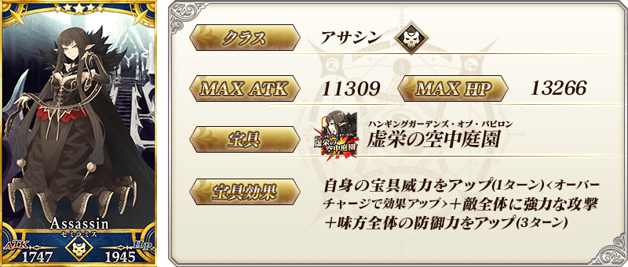
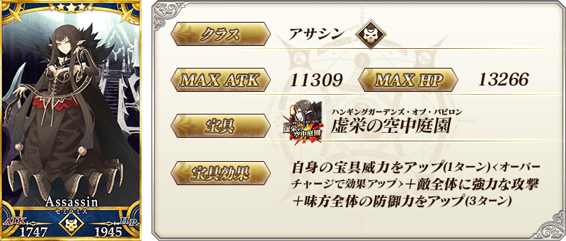
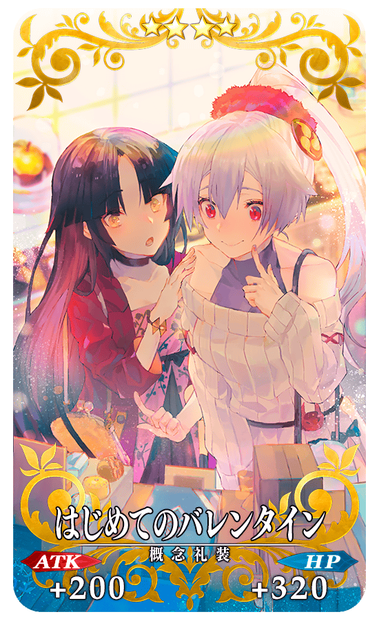
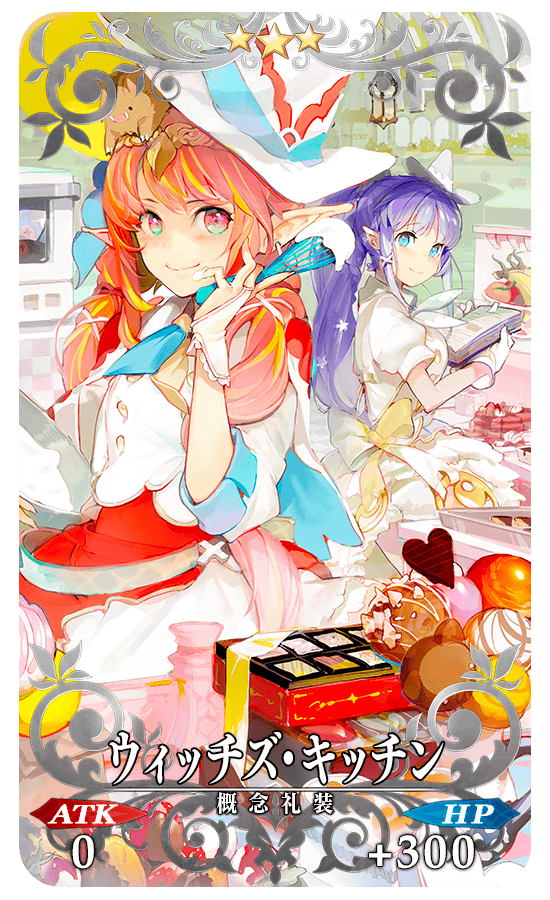
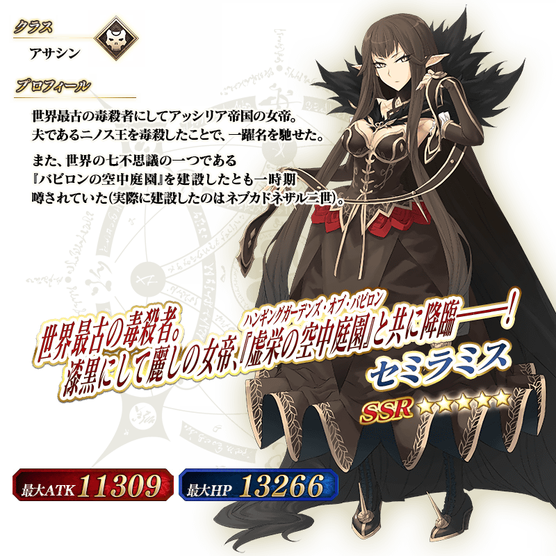

◆「復刻 情人節2018Pick Up召喚」期間◆
期間:2019年2月13日(三) 17:00～2月27日(三) 11:59
舉辦期間限定「復刻 情人節2018Pick Up召喚」！
「★5(SSR)賽米拉米斯」以期間限定登場！
變更在2018年舉辦的「情人節2018Pick Up召喚(每日交替)」一部份內容進行復刻。
期間限定「復刻 情人節2018Pick Up召喚」中，只限女性Servant做為抽出對象，「★5(SSR)賽米拉米斯」Pick Up。
詳情請在聖晶石召喚畫面左下的召喚詳細確認。
並且，概念禮裝「★5(SSR)ファラオ・チョコラトル」「★4(SR)はじめて的バレンタイン」「★3(R)ウィッチズ・キッチン」以期間限定復刻Pick Up！
◆有關Servant的注意◆
※賽米拉米斯在Pick Up期間結束後不會追加到故事召喚。
※除了性別「女性」的Servant外，恩奇杜、夏爾・德翁、阿斯托爾福也包含在抽出對象。
◆有關概念禮裝的注意◆
※請注意做為抽出對象的期間限定概念禮裝只限「★5(SSR)ファラオ・チョコラトル」「★4(SR)はじめて的バレンタイン」「★3(R)ウィッチズ・キッチン」，其他的期間限定概念禮裝為抽出對象外。
※ウィッチズ・キッチン在Pick Up期間中，也能在友情點數召喚獲得。
※請注意自友情點數召喚抽出的ウィッチズ・キッチン在自動變還設定登錄★3(R)概念禮裝的情況，會變成自動變還的對象。
※「★5(SSR)ファラオ・チョコラトル」「★4(SR)はじめて的バレンタイン」「★3(R)ウィッチズ・キッチン」在期間限定活動「情人節2019 語音＆書信收藏！～紫式部與7本詛咒書～」中沒有提升活動收集道具掉落獲得數的效果。
Pick Up期間中，期間限定Servant、期間限定概念禮裝的出現機率提升！
10次召喚中確定1張★4(SR)以上和確定1位★3(R)以上的Servant！ ※確定★4(SR)以上包含Servant和概念禮裝。
 



|
★★★★★SSR |
|  |
★★★★SR |
|  |
★★★R |

介紹賽米拉米斯的寶具演出！
另外，「Fate/Grand Order」官方網站內的公告中，公開了「★5(SSR)賽米拉米斯」的寶具演出。敬請確認。
關於期間限定活動「情人節2019 語音＆書信收藏！～紫式部與7本詛咒書～」和期間限定「情人節2019Pick Up召喚(每日交替)」的詳情請自下述橫幅確認。